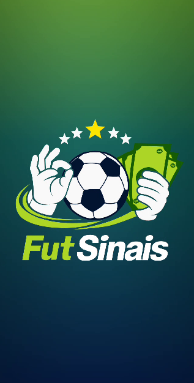

Teste fechado • Fut Sinais
Entre no teste e instale o app do jeito certo
Faça os dois passos pelo celular Android usando a mesma conta Google da Play Store. Primeiro entre no teste pela web. Depois abra o link de instalação no Android.
Importante: abra os dois links no celular Android e use a mesma conta Google do aparelho.


Como participar
1
Abra esta página no seu celular Android.
2
Toque em Entrar no teste pelo celular e faça login com a mesma conta Google usada na Play Store.
3
Na página que abrir, toque em Become a tester para entrar no teste.
4
Volte para esta página e toque em Instalar no Android.
5
A Play Store abrirá no seu celular para instalar o app.
Se o app não aparecer para instalar, confirme se você está usando a conta Google correta e aguarde alguns minutos após entrar no teste.
Antes de publicar
1
Troque
SEU_LINK_WEB_DE_OPT_IN_AQUI pelo link de Participar na Web.2
Troque
SEU_LINK_ANDROID_DE_INSTALACAO_AQUI pelo link de Participar no Android.3
Envie para o GitHub os arquivos
logo.png, logo2.png, googleplay.png, screenshot-home.png e screenshot-detail.png.4
Publique esta página como
teste-fechado.html no seu repositório do GitHub Pages.Veja o app
 Tela principal com sinais ao vivo
Tela principal com sinais ao vivo
 Detalhes da partida e sinais do jogo
Detalhes da partida e sinais do jogo